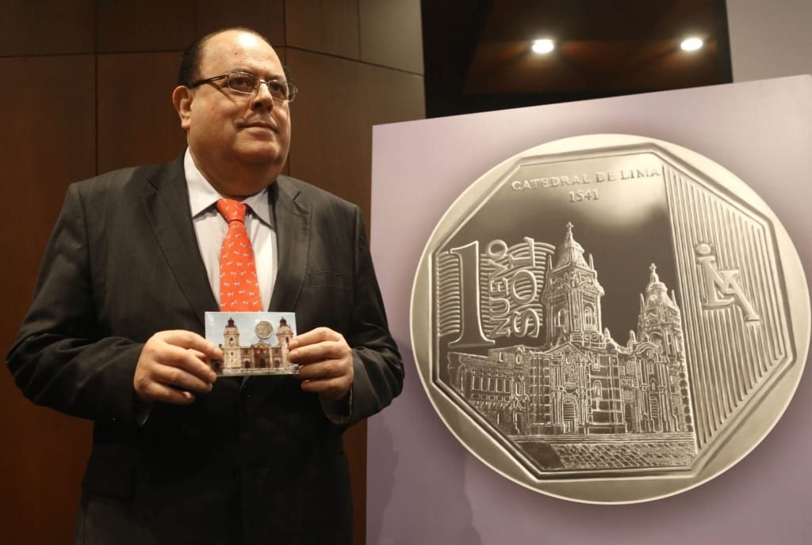

Sol Peruano y BCRP ahora entre las monedas más duras del Mundo
04/10/2024
¿Para qué dólares, euros o francos suizos? ¡Con los soles ya nos basta y sobra!
Sorprendentemente, a día de hoy, el sol peruano se encuentra entre las diez monedas más duras del mundo.
Se sabe que una moneda es fuerte cuando tiene 2 elementos: estabilidad y alta demanda global. Entre las monedas más fuertes del mundo se encuentra el dinar kuwaití, que es la moneda más valiosa frente al dólar estadounidense debido a las vastas reservas petroleras de Kuwait. También sobresale el dinar bahreiní, junto con el rial omaní y el dinar jordano, respaldadas por sus economías estables. El franco suizo es otra moneda fuerte, reconocida por la confiabilidad del sistema bancario de Suiza. Curiosamente, a lo largo de la historia humana, muy pocas veces se ha visto que una moneda latina se cuele entre las más fuertes del mundo. No obstante, aunque no lo creas, esto ha sucedido recientemente.
El Sol peruano fue introducido en 1991, reemplazando al inti, que había sufrido una fuerte devaluación debido a la hiperinflación.
Para sorpresa de todos, su creación marcó un punto de estabilidad económica, ya que el sol ayudó a reducir la inflación y estabilizar el valor de la moneda local frente al dólar estadounidense. El Banco Central de Reserva del Perú ha desempeñado un papel completamente fundamental en la preservación de su valor mediante políticas monetarias responsables. Desde su creación, el sol ha mantenido una posición relativamente estable en la economía global, a pesar de las crisis económicas que han afectado a la región. La independencia del BCR es clave para su éxito, ya que le ha permitido manejar la política monetaria con autonomía, resistiendo presiones políticas y evitando la inestabilidad financiera.
Pero no había sobrepasado ese nivel. Solo se consideraba una de las monedas más estables de la región. Pero, ¿y qué tal si ahora está entre las más duras del mundo?.
La economía peruana ha mostrado signos de recuperación tras un periodo de desaceleración en los años anteriores. En abril de 2024, la economía creció un 5,3%, la tasa interanual más alta desde septiembre de 2021, según datos del Instituto Nacional de Estadística e Informática (INEI). Este crecimiento ha superado las expectativas y se atribuye en gran medida al buen desempeño de los sectores primarios, como la pesca, que creció un 158,4%, y la manufactura primaria, con un aumento del 32,6%. El incremento en la pesca fue impulsado por la extracción de anchoveta en la zona norte-centro del país. Además, el sector agropecuario alcanzó un crecimiento histórico del 23,7%, gracias a las condiciones climáticas favorables que beneficiaron cultivos como la papa y la avena forrajera.
El riesgo país de Perú se ha mantenido estable, en parte debido a la fortaleza de las políticas macroeconómicas y la recuperación económica en curso.
El Banco Central de Reserva (BCR) de Perú ha mantenido su proyección de crecimiento del Producto Bruto Interno para 2024 en un 3%. Este pronóstico está basado en varios factores, como la ausencia de choques de oferta, como los que afectaron a la economía en 2023, los precios favorables de las exportaciones, la disminución de la inflación, y las políticas económicas contracíclicas, que incluyen una reducción en la tasa de interés de referencia y un aumento en la inversión pública. Asimismo, el BBVA Research también ha proyectado un crecimiento del PBI entre el 3% y 3,5% para la segunda mitad de 2024.
Los sectores que se espera que lideren el crecimiento económico en los próximos meses incluyen servicios, comercio, construcción, manufactura, pesca y minería. Estos sectores están impulsados principalmente por la demanda agregada interna y el incremento de las exportaciones. La inversión privada en infraestructura, como el puerto de Chancay y la nueva carretera central, también juega un papel crucial en la recuperación económica, al igual que los tratados de libre comercio que Perú ha establecido con las principales economías mundiales. Nos guste o no, las inversiones chinas en el territorio nacional tienen mucho que ver en estos grandes logros que hemos estado consiguiendo como nación.
Y probablemente esto no se va a detener.
¿Y qué tal si todo esto ha hecho que la moneda oficial de este país se posicione como una de las más fuertes del mundo?
El mismo Banco Central de Reserva del Perú ha mantenido una política monetaria autónoma y eficiente, lo que ha permitido que el sol peruano se considere una de las diez monedas más fuertes del mundo.


 Este sitio utiliza cookies para mejorar la experiencia del usuario.
Este sitio utiliza cookies para mejorar la experiencia del usuario.